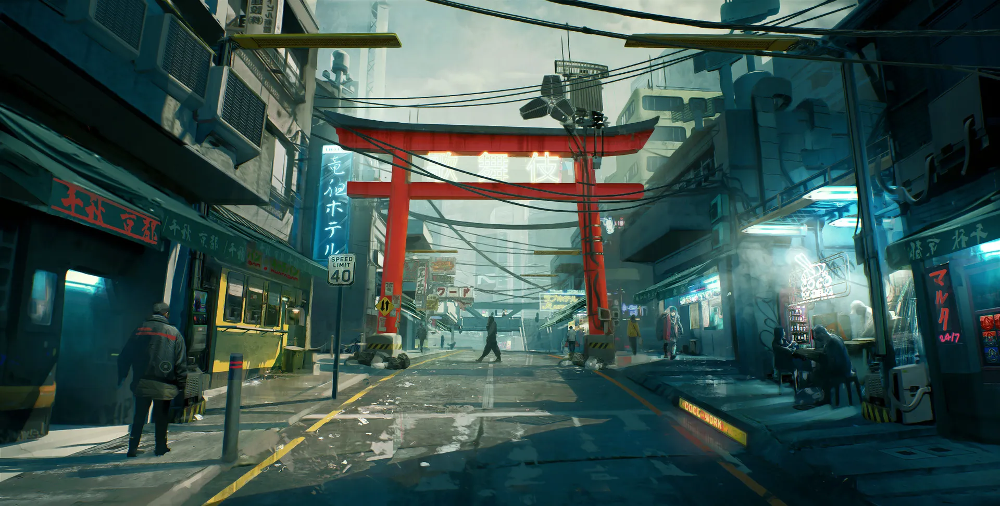
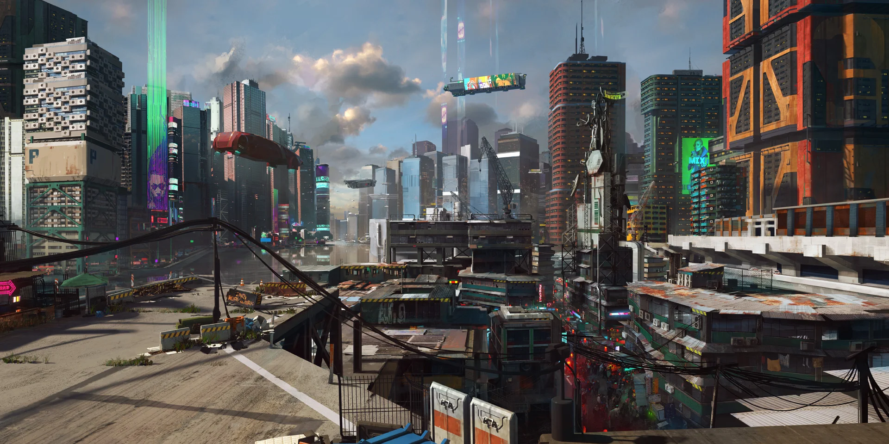
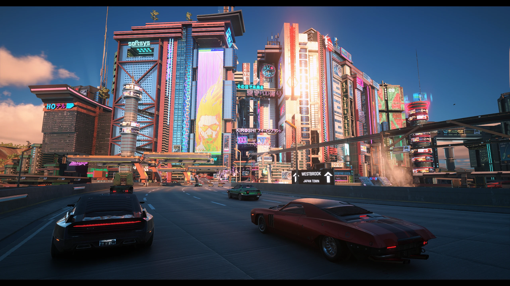
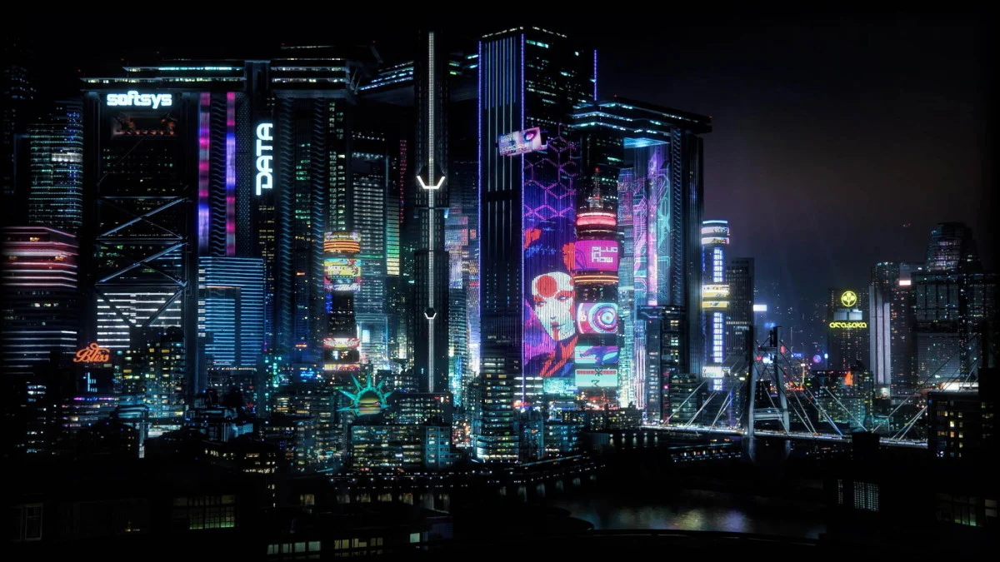
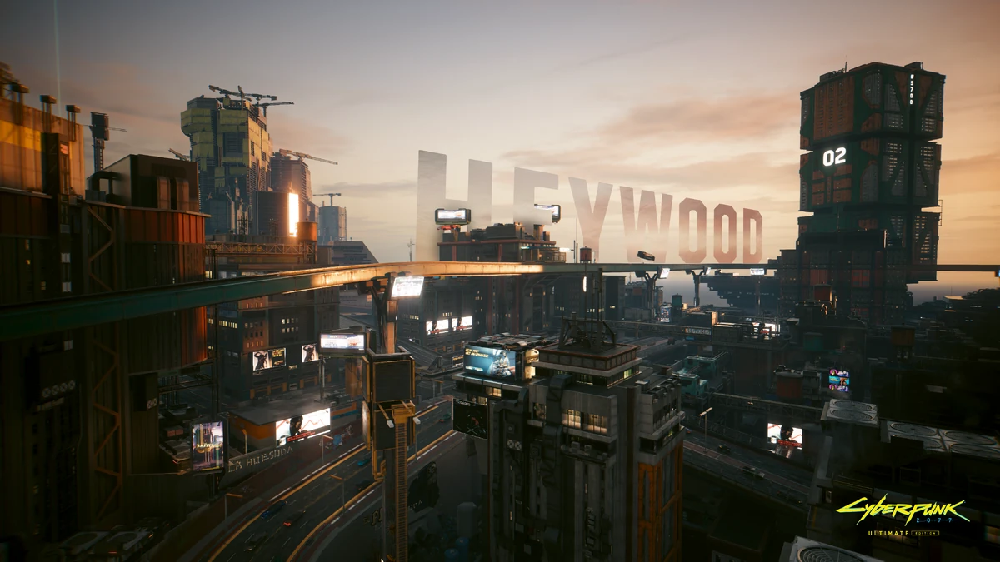
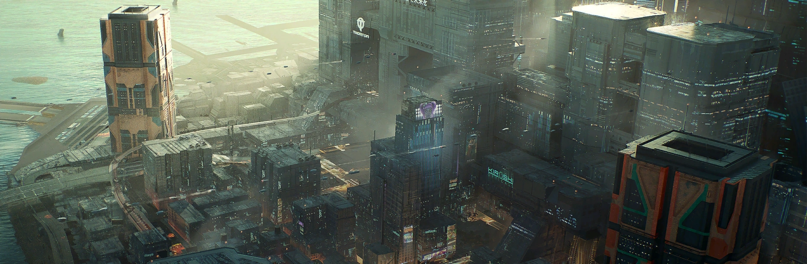

Watson
Antiguo centro industrial y portuario de la ciudad. Hoy en día es una zona densamente poblada, famosa por sus mercados locales, puestos callejeros y una intensa actividad comercial y nocturna.


En esta sección vas a encontrar un recorrido por nuestra historia, los distintos barrios, las zonas comerciales y todos los datos clave para conocer a fondo la ciudad.
Fundada originalmente a mediados de los 90' bajo el nombre de Coronado City por el empresario Richard Night, la localidad fue concebida inicialmente como una ciudad libre de la corrupción de otras grandes ciudades. Sin embargo, tras el trágico fallecimiento de su fundador, la ciudad fue rebautizada como Night City en su honor y pasó a ser administrada por las grandes empresas privadas.
Hoy en día, Night City se consolidó como la ciudad tecnológica ubicada en la costa oeste de Estados Unidos. Su identidad está definida por ser una ciudad gigante llena de edificios altísimos, luces de neón y mucha tecnología.
Antiguo centro industrial y portuario de la ciudad. Hoy en día es una zona densamente poblada, famosa por sus mercados locales, puestos callejeros y una intensa actividad comercial y nocturna.


Es el distrito enfocado en el turismo, el lujo y el entretenimiento. Aquí se concentran los hoteles más caros, los centros comerciales de alta gama y la zona residencial más exclusiva de la ciudad.


Una zona residencial muy extensa con marcados contrastes. Funciona como el dormitorio de miles de trabajadores y cuenta con una fuerte identidad cultural y comunitaria en sus calles.

